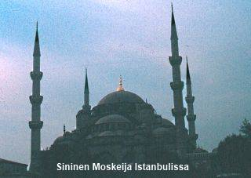
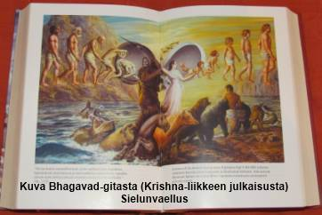
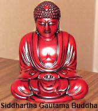

1. Johdatus uskontojen maailmaan
2. Islam
3. Hindulaisuus
4. Buddhalaisuus
5. Muita uskontoja
I JOHDATUS USKONTOJEN MAAILMAAN
1. Mitä ovat maailmanuskonnot?
• Laajalle levinneitä ja kannattajamäärältään suuria uskontoja
• Uskontoja ja lahkoja on maailmassa lähes 20 000
• Kannattajamäärien arviointia vaikeuttaa:
- Maat eivät anna luotettavaa tietoa
- Maallistuneisuus (länsimaissa)
- Henkilö ilmoittaa kannattavansa useita uskontoja (Aasian maat)
• Kaikki maailmanuskonnot ovat syntyneet Aasiassa
• Maailman uskontotilasto 2012 (laatineet: Johnson, Barrett, Crossing - aatesuunnan synnyinaika/kannattajamäärä):
- kristinusko n. 30 jKr./n. 2,325 mrd.
- islam n. 600 jKr./n. 1,583 mrd.
- hindulaisuus n. 1500 eKr./n. 969 milj.
- uskonnottomat - /661 milj.
- buddhalaisuus n. 500 eKr./n. 473 milj.
- kiinalaisperäiset uskomukset: mm. kungfutselaisuus ja taolaisuus n. 500 eKr./yht. n. 467 milj.
- kansanuskontoja - /264 milj.
- ateisteja - /136 milj.
- ns. uusien uskontojen kannattajia n. 1800-l. jälkeen syntyneet /63 milj.
- sikhit n. n. 1500 jKr./24 milj.
- juutalaisuus n. 1300 eKr./n. 15 milj.
- muut 72 milj.
2. Mitä uskonto on?
• J.B.Prattin määritelmä: "Uskonto on yksilöiden ja ryhmien vakava sosiaalinen asennoituminen siihen mahtiin tai niihin mahteihin, joiden he viimekädessä uskovat säätelevän pyrkimyksiään ja kohtaloitaan."
• Uskonnot ovat vastausyrityksiä perimmäisiin kysymyksiimme
- Onko olemassa Jumala/jumalia ja millainen jumaluus on?
- Mikä on elämän tarkoitus?
- Miksi olen olemassa?
- Mitä tapahtuu kuolemassa ja sen jälkeen?
- Miksi on olemassa hyvä ja paha, oikein ja väärin?
• Uskonnon viisi ulottuvuutta:
1. tiedollinen eli kognitiivinen (opit)
2. tunnepohjainen eli affektiivinen (tunne Jumalan läheisyydestä)
3. toiminnallinen eli konatiivinen tekijä (rukous)
4. yhteisöllinen eli sosiaalinen tekijä (jumalanpalvelus)
5. kulttuuritekijä (taide)
3. Uskonnollinen kokemus ja käyttäytyminen
• Uskonnollinen kokemus ilmenee kertomuksissa ja rituaaleissa (riitit)
• Kultti = uskonnollinen palvontameno
- esim. rukous, mietiskely, jumalanpalvelusmenot
- kulttia varten usein oma palvontapaikka (kirkko, moskeija, synagoga, pagodi, temppeli)
- Uhri = lahja, jonka avulla ihminen lähestyy jumalaa (suitsuke, ruoka, kukat)
• Riitti = perinnäistä, säännönmukaista kaavaa noudattava uskonnollinen toimitus/kokemus
• Riittien lajit:
1. Kalendaaririitit
- vuodenaikojen vaihteluun liittyviä
2. Kriisiriitit
- esim. sairauden tai nälän poistamiseksi (sadetanssi)
3. Siirtymäriitit
- yksilö siirretään asemasta toiseen (kaste, avioliitto jne.)
• Magia = riittitekniikka, jolla pyritään vaikuttamaan ja hallitsemaan yliluonnollisia voimia, olentoja ja henkiä
1. yhtäläisyys- eli jäljittelymagia (sadepilviä savulla)
2. kosketusmagia (voodoo-nuket)
3. musta magia (pahaa)
4. valkoinen magia (hyvää)
II ISLAM
1. Perustaja ja pyhä kirja
A. Muhammedin elämä

• Islamin taustalla
- beduiinien (=paimentolaisten) polyteistinen uskonto
- korkein jumala oli Allah, jota palvottiin Mekassa Kaaban temppelissä
- palvottiin taivaankappaleita
- vaikutteita kristinuskosta ja juutalaisuudesta
• Muhammed syntyi Mekassa v.570 jKr.
• Orvoksi 6-vuotiaana ja hänet kasvatti hänen setänsä
• Pääsi rikkaan Khadija-nimisen lesken palvelukseen ja otti tämän vaimokseen ollessaan 25-vuotias
• N. 40 ikäisenä kutsu profeetaksi (näkyjä ja unia Gabrielilta Hiran-luolassa Mekassa)
• V. 622 pakeni vainottuna profeettana Mekasta Medinaan (n. 60 kannattajaa)
- Tämä hijra on islamilaisen ajanlaskun alku
• V. 630 useiden sotatoimien jälkeen valtasi Mekan, josta muslimien keskus
• V. 632 kuoli Medinassa
• Seuraavaksi kalifiksi (arab. seuraaja) tuli Muhammedin appi ja ystävä Abu Bekr, sitten Omar ja kolmanneksi Othman. Vasta neljäs
kalifi oli Muhammedin sukulainen, Muhammedin serkku ja hänen tyttärensä Fatiman puoliso. Siialaiset tunnustavat vasta Alin ensimmäiseksi oikeaksi Muhammedin seuraajaksi
B. Koraanin synty ja sisältö
• Syntyi Muhammedin saamista ilmestyksistä ja puheista
- ei osannut lukea eikä kirjoittaa itse
- koottiin aluksi nahan- ja luunpalasille sekä kivitauluihin
- osa syntyi jo Muhammedin eläessä (mm. enkeli Gabrielin ilmoitus), mutta koottiin vasta n. 650 viralliseen muotoonsa
• Koraani (arab. Quran) = lukeminen
• Kirjoitettu arabiaksi
- erehtymätön jumalallinen totuus
- tarkka jäljennös alkuperäisestä, joka on taivaassa
- virallisesti ei saa kääntää muille kielille (käännökset kommentaareja eli selitysteoksia)
- luetaan resitoiden ts. ääneen laulavalla rytmillä
• Sisältää 114 suuraa eli lukua, jotka sijoitettu laajuusjärjestykseen
• Muu kirjallisuus
- Sunna = Muhammedin opetuksia ja kertomuksia hänen elämästään sekä hänen sanontojaan (hadith-perimätietoa)
- sunna on Koraanin käytännön tulkintaa
• Sharia = uskonnollinen laki (Koraaniin ja sunnaan perustuva moraalilaki)
2. Islamin oppi
• Islam = "alistuminen", täydellinen antautuminen Jumalan johdatuksen varaan
• Islam on uskoa ja lakia:
- uskoon sisältyvät ns. uskonkappaleet (ks. alla)
- lakiin Jumalan palvonta ja sen muodot, moraaliperiaatteet ja yksilöitä ja yhteisöä koskevat säännöt ja normit.
Uskonkappale 1: Usko yhteen Jumalaan
• Ehdoton monoteismi.
• Uskontunnustus: "Ei ole muuta jumalaa kuin Allah (arab. jumala) ja Muhammed on hänen profeettansa"
• Usko on sydämen olotila ja todellinen usko ilmenee tekoina.
Uskonkappale 2: Usko enkeleihin
• Usko enkeleihin ja dzinneihin (hyvää tai pahaa tuottaviin henkiolentoihin)
• Mm. Gabriel sanansaattajaenkelinä kuten Raamatussakin.
Uskonkappale 3: Usko Jumalan kirjoihin
• Muslimien mukaan mm. Toora (5 Mooseksen kirjaa), Psalmit ja Evankeliumit ovat Jumalan ihmisille lähettämiä
ja sisältävät totuuden.
• Koraanissa osoitetaan kuinka ihmiset ovat väärentäneet em. kirjoja.
• Koraani on ainoana todellinen pyhä kirja (ks. edellä).
Uskonkappale 4: Usko profeettoihin
• Jumalallinen totuus on välitetty ihmisille profeettojen kautta.
• Tärkein ja lopullinen profeetta on Muhammed (rauha hänelle).
• Muita profeettoja Koraani mainitsee 25, mm. Aadam, Nooa, Aabraham, Ismail, Iisak, Jaakob, Daavid ja Jeesus.
• Jeesus ei ole Jumala eikä Jumalan Poika, mutta arvostettu Muhammedia edeltänyt profeetta.
Uskonkappale 5: Usko kuolemanjälkeiseen elämään
• Jumalan tuomiopäivänä ihmiset tuomitaan tekojen mukaan.
• Ylösnousemuksen päivänä hyvät ihmiset pääsevät paratiisiin ja pahat tuomitaan helvetin kärsimyksiin.
Uskonkappale 6: Usko Jumalalliseen kohtaloon
• Kaikki maailmassa tapahtuu Jumalan tahdon mukaisesti.
• Jumala on ennaltatiennyt ja -määrännyt asiat ja tapahtumat.
• Ihmisellä on kuitenkin vapaa tahto toimia mm. Jumalan tahdon vastaisesti.
3. Islamin kultti ja perinteet
A. Viisi peruspilaria
1. Uskontunnustus (shahada, ks. edellä)
2. Rukous (salat, selän taivuttaminen)
- viidesti vuorokaudessa
- minareetista (moskeijan tornista) kuulutetaan rukoushetken alkaminen
- rukoillaan imaamin (seurakunnan johtaja) johdolla
3. Paasto (saum)
- ramadan, kuuvuoden yhdeksäs kuukausi paastotaan (huom. käytössä kuukalenteri)
- auringon noususta laskuun ei ole luvallista syödä, polttaa tupakkaa tai harjoittaa sukupuolielämää
4. Pyhiinvaellus (hajj) Mekkaan Kaaban pyhäkköön ainakin kerran elämässä
5. Almuvero (zakat=puhdistaminen)
- Muhammedin määräämä "köyhäinhoitovero" (säästösummasta 2,5 %)
B. Muita piirteitä
• Islamin uskonnollinen laki eli sharia sisältää sääntöjä ja velvotteita.
• Islamin laki kieltää:
- alkoholijuomat,
- sianlihan ja veriruokien syönnin,
- uskonnollisten kuvien käytön,
- uhkapelin ja koronoton
• Fatwa = muslimioppineen tai imaamin kanta lainopilliseen ongelmaan, johon ei löydy vastausta aiemmasta kirjallisuudesta.
• Rangaistuksina vielä joissakin maissa mm. kuolemantuomio, kunniamurha ja varkaan käden katkaisu.
• Pyhä sota eli jihad
- kuollut pääsee paratiisiin
- puolustussota ummaa (eli islamin yhteisöä) hyökkääviä vastaan
- fundamentalisteilla aseellinen sota
- mystisemmin henkistä taistelua elämässä esiintyvää pahuutta vastaan
• Naisen asema
- Koraanin mukaan miehellä voi olla neljä vaimoa sekä sivuvaimoja
- avioliitto voi olla jatkuva tai tilapäinen
- avioliittosopimuksessa nainen voi asettaa esim. ehdon, ettei mies voi ottaa muita vaimoja (jos mies rikkoo sopimusta, saa vaimo erota miehestään)
- muslimimies voi mennä naimisiin ns. tilapäisessä avioliitossa myös kristityn tai juutalaisen naisen kanssa, tällöin lapset tulee kasvattaa islamin uskoon
- vaimoja tulee kohdella tasapuolisesti
- mies voi ottaa eron, vaimo voi pyytää mieheltään avioeroa
- naisella oikeus omaisuuteen ja erotessa taloudelliseen turvaan
- joissakin fundamentalistisissa maissa huntupakko, opiskelukielto
• Hautaaminen oikealle kyljelle kasvot Mekkaan päin.
• Islamin rakennustaiteen ilmentyminä moskeijat, joiden yhteydessä minareetit.
• Kuvataiteessa mm. moskeijoiden sisällä koristeena Koraanin lauseita kaunokirjoituksena esittävä kalligrafia ja ornamentti- eli koristetaide (jossa geometrisiä kuvioita)
4. Islamin pääsuunnat
A. Siialaisuus
• N. 16 % muslimeista
• Enemmistönä Iranissa ja Irakissa
• Korostaa imaamin roolia
• Eivät hyväksyneet kolmea ensimmäistä kalifia. Kalifiksi kelpasi vain Muhammedin sukulainen.
B. Sunnalaisuus
• N. 83 % muslimeista
• Pohjois-Afrikassa, Arabiassa, Euroopassa
• Uskovien tuli valita vaalilla tehtävään sopivin kalifi, profeetan seuraaja
• Koraaniin ja sunnaan pitäytyminen, ei hyväksytä myöhempiä lisäyksiä
C. Suufilaisuus
• Jo 800-luvulla syntynyt mystikkoliike (mm. Turkissa, Pohjois-Afrikassa ja Intiassa)
• Askeettinen herätysliike, joka käytti villavaatteita (suuf = villa)
• Hurskauselämän korostus ja köyhyyden ihannointi
• Pyhiinvaelluksia hurskauden muslimien haudoille.
• Panteistisia piirteitä - jumaluuteen sulautuminen
III HINDULAISUUS
1. Hindulaisuuden synty ja lähteet
A. Historiallinen katsaus
• 2300-1700 eKr. Induskulttuuri
- "hindu", Indus-virran (darj-e-hind) varrella asuva ihminen
- dravidit = tummaihoinen alkuperäisväestö
• 2000-1500 eKr. Arjalaiset tulevat
- Indusjokilaakson valtaus
- kastilaitoksen alku: dravidit alistetaan
• 1500-800 eKr. VEDA-USKONTO
• 800 eKr.-400 jKr. BRAHMALAISUUS
- pappisvaltainen uhriuskonto, polyteismi lisääntyy
- 500 eKr. syntyvät protestiliikkeet jainalaisuus ja buddhalaisuus
• 400-700 jKr. VARSINAINEN HINDULAISUUS
• 712 jKr. Islam Intiaan
• 1498 jKr. Vasco da Gama Intiaan (krist.)
• 1800- jKr. UUSHINDULAISUUS
• 1858 jKr. Intia Ison-Britannian alainen
• 1947 jKr. Intia itsenäistyy (Pakistan muslimeille/Intia hinduille)
- Mahatma (Mohandas) Gandhi
B. Pyhät kirjat eli VEDA-kirjallisuus
1. Ilmoitetut kirjoitukset (=SRUTI, kuulla)
• Jumalten suoraa puhetta sisältävien uskonnollisten kirjojejn yhteisnimitys
• Veda-hymnit
- 1) Rigveda (jumalten kutsu- ja ylistyslauluja, joita vain papit saavat esittää), 2) Samaveda (uhrilauluja, joita vaikeiden melodioiden vuoksi vain koulutetut kanttorit esittävät), 3) Yajurveda (rukouksia, kaavoja ja selityksiä uhritoimituksia varten), 4) Atharvaveda (loitsujen ja manausten kirja).
- sanskriitinkielisiä uhri-, rukous- ja ylistyshymnejä sekä loitsuja
- Rigveda, synt. 1200-1000 eKr.
- muut synt. n. 1000-800 eKr.
• Brahmana-kirjat
- selittävät Vedoja
- pappien rituaalisia käsikirjoituksia
- synt. n. 800-600 eKr.
• Upanisadit (=istuminen, kuunteleminen)
- Brahmana-kirjojen täydennystä
- synt. 800-600 eKr.
- nimitetään myös Vedantaksi eli Vedojen loppu
2. Pyhän perinteen kirjoitukset (=SMRITI, muistaa)
• täydentävää ja selittävää Veda-hymneihin liittyvää kirjoitusta
• Ramajana (runoelma, 300 eKr.-100 jKr.)
- kertoo Rama-nimisen sankarin elämästä ja taistelusta paholaiskuningas Ravanaa vastaan.
- sankarina hindujen keskeinen apinajumala Hanuman
• Mahabharata (kansalliseepos, 400 eKr.-400 jKr.)
- sisältää 212000 säettä, kuvaa sukulaisten keskinäistä valtaistuintaistelua.

• Bhagavadgita (Herran laulu, osa edellistä)
- sisältyy Mahabharatan lukuihin 33-40
- Krisna-jumala selittää Arjuna-sankarille totuuden jumaluudesta, maailmasta ja ihmisestä.
• Puranat (legendakirjallisuutta 0-100 jKr.)
• Manun lait (lakikirjat n.100 jKr.)
2. Hindulaisuuden oppi
A. Hindulaisuus sisältää
• Polyteismiä = monijumalisuus
• Monoteismia = yksijumalisuutta
• Panteismia = kaikkijumalisuutta eli jumala ja kaikki ovat identtiset
• Monismia = käsitys, että on vain yksi perimmäinen todellisuus, alkuperuste
• Ateismia = ei jumalia
B. Tärkeimmät jumalat
• Brahmalaiskaudelta peräisin kolme tärkeintä
• BRAHMA = luojajumala, joka on synnyttänyt maailman ja nykyisen aikakauden v. 3102 eKr. (päättyy n. 427 000 v:n kuluttua)
- myös Brahma sidottu kiertokulkuun (elinaika yli 300 000 000 000 000 vuotta, jolloin syntyy uusi B.)
- ts. syklinen aikakäsitys
• VISNU = pitää yllä elämää ja ikuista järjestystä
• SIVA = hävittäjäjumala, joka maailmankauden lopussa tanssii maailman pirstaleiksi
• muita jumalia on yli 30 miljoonaa
C. Hindulainen maailmankuva
• Panteistinen monismi = jumala on kaikessa ja mitään ei ole olemassa, joka ei ole jumala
• Brahman = persoonaton maailman sielu, josta kaikki alkaa ja johon kaikki palaa (monismia). Brahman ilmenee juuri em. kolmena jumalpersoonana (Brahma, Visnu, Siva).
• Atman = ihmissielu, joka myös on persoonaton ja todellisuudessa yhtä maailmansielun kanssa, eli
- Tat tvam asi = "sinä olet se", atman = brahman.
• Maya = harha, koko näkyvä maailma on harhaa
- koska se ei edusta perimmäistä todellisuutta
• Samsara = sielunvaellus
• Karman laki = syyn ja seurauksen laki, jonka mukaan edellisen elämän tekojen summa määrää olotilan seuraavassa elämässä
• Moksa = vapautuminen sielunvaelluksesta on kaiken päämäärä ts. atmanin yhtyminen brahmaniin
- Moksa saavutetaan tiedon, askeesin ja mietiskelyn kautta, itseään kehittämällä pois pahoista haluista, intohimoista jne. elämiensä aikana.
D. Hindulaisuuden pääsuuntauksia
1) Vaishnavismiin kuuluu enemmistö hindulaisista.
- Vishnua palvotaan ylimpänä jumalana (tai hänen avataraansa Krishnaa eli Korkeinta Herraa, kuten Krishna-liikkeessä, monoteismiä).
- palvojilla on otsassa v-kirjaimenmuotoinen Vishnun jalanjäljen merkki
2) Shaivismissa palvotaan Shivaa
- palvojilla tuhkalla piirretty kolme vaakaviivaa otsassa
- palvojissa paljon askeetteja
3) Shaktismissa palvotaan Shivan puolisoja kuten Durgaa tai Kalia
- Shakti merkitsee jumalan aktiivista energiaa (jumalatarta) luomakunnassa
3. Hindulaisuuden kultti ja tavat
A. Temppeli- ja kotikultti
• Kotikultti
- kotona on erityinen huone tai nurkkaus jumalakuvineen ja -patsaineen
- erilaisia uskonnollisia toimituksia: pyhän langan saaminen, häät, polttohautaus
• Temppelikultti
- jumalia palvelevat bramiinit eli papit huolehtien pyhistä kuvista ja patsaista
- maallikot tuovat lahjoja
• Mantra = maaginen pyhä tavu (kuten OM), joka auttaa keskittymään
• Kultin tavoitteena moksa
B. Ahimsa-periaate
• Kieltäytyminen kaikesta elollisen vahingoittamisesta ja väkivallasta pohjautuu sielunvaellusoppiin.
• Eläin on voinut olla joskus ihminen
• Kasvissyönti
• Palvotaan lehmää, apinaa, kotkaa, leijonaa, norsua
C. Neljä elämänvaihetta
• Jokaisen korkemman kastin jäsenen tulisi käydä läpi elämänsä aikana
1. Opiskeluvaihe
- Vedan opiskelu n. 25 vuotiaaksi
2. Perheenisävaihe
- avio- ja maallinen elinkeinoelämä
3. Erakkovaihe
- n.50-vuotiaana yksin tai vaimonsa kanssa metsiin erakoituminen
4. Askeettivaihe
- n.75 v. vaeltavaksi askeetiksi eli sadhuksi, jossa pyrkimyksenä moksan saavuttaminen
4. Kastilaitos
• Pääkastit (4)
- Bramiinit = papit (valkoinen tunnusväri)
- Ksatrijat = sotilaat (punainen)
- Vaisjat = kauppiaat (keltainen)
- Sudrat = palvelijat (musta)
- Kastittomat = "koskemattomat", joiden varjostakin korkeampaan kastiin kuuluva saattaa saastua
- Lukuisia alakasteja
• Syntyi arjalaisten valloittaessa Intia dravideilta; perustelut myös pyhissä teksteissä
• Aiheuttanut nälkää, syrjintää, luokkajaon rikkaisiin ja köyhiin, määrää ammattit, ystävyys- ja aviosuhteet sekä poliittiset puolueet
• Kumottiin virallisesti 1953 jKr. Gandhin työn vaikuttamana, kuitenkin vaikuttaa edelleen
5. Hindulaisuuden koulukuntia
A. Tärkeimmät koulukunnat
1. Vedanta-koulukunta
• Opettajana Samkara (700-800 jKr.): Kun ihminen voittaa tietämättömyyden ja oivaltaa olevansa yhtä brahmanin kanssa, loppuu samsara
• Kolme pelastustietä:
1. Tiedon tie = jnana-marga
- älyllisesti opitaan tieto, että atman=brahman
2. Tekojen tie = karma marga
- vapautus tekojen ja uhrien kautta
3. Rakkauden tie = bhakti marga
- jumalalle antautuminen ja palvova rakastaminen
2. Jooga-koulukunta
• Mainittu jo Veda-kirjoissa
• Perustaja Patanjalia, joka kirjoitti yogasutran n. 200 eKr.
• Korkein Joogan muoto on kahdeksanosainen Raja-jooga
• Hathajooga korostaa mielen ja ruumiin vuorovaikutusta (suosittu länsimaissa)
• Asanat = asennot, liittyvät ruumiin hallintaan
B. Mohandas Gandhi (1869-1948)
• Intialaisten oikeuksien puolustaja ja väkivallattoman vastarinnan käyttäjä
• Vaikutteita Intian filosofiasta, kristinuskosta ja Tolstoilta
• Edusti tekojen tie -suuntausta
• Uskonnoilla sama päämäärä ja samanarvoisuus
• Taisteli kastilaitosta vastaan
• Arvonimi: Mahatma = suuri sielu
• Saavutti Intian itsenäistymisen 1947
C. Hindulaisperäisiä liikkeitä
1. Jainalaisuus (n. 4 milj.)
• perustaja Mahavira n. 500 eKr.
• ahimsa-periaate viety äärimmäisyyteen (jopa juomavesi siivilöidään, hengityssuoja jne.)
• luostariyhteisöjä
• pyrkimys irrottautua ilmiöiden maailmasta ja tämän jälkeen näännyttää itsensä nälkään
2. TM eli transendentaalinen mietiskely
• perustaja Maharishi Mahesh Yogi (synt. n. 1917)
• levittänyt oppia "luovan älykkyyden tiede" länsimaihin
• stressin poisto syvämietiskelyn avulla
3. Krishna -liike
• perustaja Bhaktivedanta Swami Prabhupada (1896-1977)
• korostaa Krishna-jumalan palvontaa, mietiskelyä, kasvissyöntiä ja rituaalista musiikkia
• erittäin suosittu länsimaissa
4. Teosofia - jumalallinen viisaus
• perusti v. 1875 New Yorkissa Helena Blavatsky sekä H.S. Olcott (1878 seura siirtyi Intiaan)
• oppi ihmiskunnan yleisestä veljeydestä
• synkretistinen
• jälleensyntymisoppi, parapsykologia, telepatia, henkisen kehityksen edistäminen
• Ruusuristi ja Kristosofia
- Pekka Ervast erosi v. 1920 Teosofiasta
- Kalevala muinaissuomalaisena Veda-kirjana
- Ruusurististä erosi Kristosofia, jonka mukaan Ervast oli odotettu maailmanopettaja, avatara
• Antroposofinen seura
- Rudolf Steiner erosi 1913 Teosofisesta seurasta
- biodynaaminen viljely ja steinerpedagogiikka
- "hengentieteellinen ihmiskäsitys"
IV BUDDHALAISUUS
1. Buddhalaisuuden synty ja lähteet
A. Buddhalaisuuden perustaja

• perustaja: Siddhartha Gautama (n. 566-486 eKr.)
• rikkaan ruhtinaan poikana eli suojattua elämää
- eli ylellistä ja suojattua elämää syntymähoroskoopin vuoksi
• 29-vuotiaana kohtasi kärsimyksen, näki vanhuksen, sairaan, kuolevan ja askeetin: "Elämä on kärsimystä".
• jätti perheensä ja ryhtyi askeetiksi löytämättä siten totuutta
• vetäytyi yksinäisyyteen ja paastoon, koki 35-vuotiaana bodhipuun alla mietiskellessään valaistumisen (Buddha = valaistunut)
- ts. saavutti nirvanan eli sammumisen
• opetti dhammaa (= oppiaan) 45 vuotta
B. Pyhä kirja
• Tripitaka ="kolme koria"
- buddhalaisuuden kaanon, n. 10000 sivua
- kirjoituskieli: pali
- vahvistettiin keisari Asokan toimesta v. 245 eKr.
• Korit (pitakat):
1. kori: luostarisääntö
2. kori: Dhammapada (=Hyveen sanoja), Buddhan opetuksia
3. kori: opin filosofisia pohdiskeluja
2. Oppi ja maailmankuva
A. Perusopit
• Neljä jaloa totuutta:
1. Elämä on kärsimystä.
2. Kärsimys johtuu elämänjanosta.
3. Kärsimys voitetaan sammuttamalla elämänjano.
4. Elämänjano sammutetaan pyhällä kahdeksanosaisella hurskaustiellä.
• Jalo kahdeksanosainen tie (josta viisi ensimmäistä maallikoille ja kaikki munkeille):
1. Oikea oppi - ymmärtää 4 jaloa totuutta
2. Oikeat ajatukset - pahasta, himoista vapaat ajatukset
3. Oikea puhe - valheiden, juorujen ja turhan puhumisen välttäminen
4. Oikea toiminta - tappamisen, varastamisen ja laittoman sukupuoliyhteyden välttäminen
5. Oikea elinkeino - ammattien välttäminen, joissa esim. eläimiä vahingoitetaan
6. Oikea pyrkimys - pyrkimys hyviin ajatuksiin ja tuntemuksiin
7. Oikea tarkkaavuus - tiedostaa oma keho ja tunteet
8. Oikea keskittyminen - viiden esteen (himo, pahansuopaisuus, velttous, levottomuus ja epäilys) hävittäminen ja pääsy mielen tyyneyteen
• Jälleensyntymisoppi
- vertaa sielunvaellusoppi (hind.), ei ole persoonallista sielua, vaan ei-minuus
- pohjautuu karman lakiin
• Keskitie on ruumiillisen itsekidutuksen ja maailmallisen nautinnonhalun välillä
• Nirvana = sammuminen; tila, jossa on vapauduttu jälleensyntymisestä, päästy rauhaan ja korkeimman tietoisuuden tilaan
• jumalia ei kielletä, mutta nirvanaan päästään omin voimin
B. Maailmankuva
• Kolme olemassaolon ominaisuutta:
1. katoavaisuus
2. kärsimys
3. ei-minuus
• Karman laki
- syy-seuraus -laki määrää kaiken
• Dharma = oppi, velvollisuus
- karman määräämä "lasku" menneiltä ajoilta
• perussyy kärsimykseen on ihmisen luulo omasta, erillisestä ja pysyvästä minuudesta
3. Pääsuunnat
A. HINAJANA = pieni vaunu
• Jakautumisen syynä kiistat oikeasta opista
• Ateistinen, vanhakantaisempi buddhalaisuus
• Vain 8-osaisen tien noudattajat (ts. munkit) pelastuvat
• Mietiskely ja pyhäinjäännösten palvonta
• Eteläinen suunta (Sri Lanka, Thaimaa, Burma, Laos, Kamputsea)
• Luostareihin keskittynyt Theravada-buddhalaisuus eli "Vanhimpien opetukset" esiintyy erityisesti Sri Lankassa
B. MAHAJANA = suuri vaunu
• Pelastus mahdollista kaikille
• Buddhaan ja boddhisatvoihin turvataan oppaina tiellä valaistumisen
• Pohjoinen suunta (Kiina, Korea, Japani, Vietnam)
• Kiinassa ns. puhtaan maan koulukunta, jossa Amitabha Buddhan avulla päästään arkielämän ja nirvanan välitilaan (Puhtaaseen Maahan)
• Kuuluu mm. Tiibetin lamalaisuus (vajrajana eli timanttikulkuneuvo) ja Japanin zen-buddhalaisuus
4. Kultti ja perinteet
A. Munkkiyhteisö = sangha
• Buddha perusti seuraajistaan
• Myöhemmin syntyi nunnajärjestö
• Vaatimuksina: köyhyys, naimattomuus ja ahimsa
• Munkki elää:
- pukeutuen keltaiseen viittaan
- pää kaljuksi ajeltuna
- nukkuen lattialla
- "kerjäten" ruokansa
- opettaen ja järjestäen toimituksia ja juhlaseremonioita
- mietiskellen
- tutkien pyhiä kirjoja
B. Kultti
• Kolme jalokiveä eli "buddhalaisten uskontunnustus":
- "Minä turvaan Buddhaan. Minä turvaan oppiin. Minä turvaan munkkiyhdyskuntaan."
• Kultti yksilöllistä, ei jumalanpalvelusseremonioita
• Buddhan kuvia ei palvota, vaan ne auttavat keskittymään.
• Maallikoilla omat sääntönsä
• Viisi moraalivelvoitetta:
1) väkivallattomuus, 2) anteliaisuus, 3) totuudellisuus (ei valheita), 4) siveellisyys ja 5) tietoisuus (ei päihteitä)
• Mahajana-suunnassa maallikoilla esiintyy henkien pelkoa (vrt. peilit, kiinan pommit, patsaat)
V MUITA USKONTOJA
1. Juutalaisuus
A. Historiaa
• Varsinainen juutalaisuus ns. Mooseksen uskonto (n.1200 eKr.)
• Jumalan valitun kansan vaiheita:
- 2000-1500 eKr. Patriarkkojen aika (Aabraham, Iisak, Jaakob, Joosef)
- 1200 eKr. Pako Egyptistä, Mooses
- 1020-925 eKr. Yhtenäisen Israelin kuninkaat (Saul, Daavid, Salomo)
- 722-539 eKr. pakkosiirtolaisuus (Babylonian valtakausi)
- 539-165 eKr. Persian, Egyptin ja Syyrian valtakaudet
- 165-63 eKr. Makkabilaiskapina ja itsenäisyys
- 63 eKr. -614 jKr. Rooman valtakausi
- 614-1919 persialaisten, arabien, ristiretkeläisten, mongolien ja turkkilaisten vallassa
- 1919 P:sta Englannin mandaatti
• Antisemitismi ja sionismi
- antisemitismi = juutalaisvastaisuus
- sionismi = juutalaisten kansallinen vapautusliike
- Theodor Herzl: Juutalaisvaltio (1895)
- Baselin sionistikongressi 1897: Sionismi tähtäsi julkisesti ja laillisesti valmistetun kansalliskodin luomiseen juutalaisille Palestiinaan.
- 1935-1945 Hitler tuhoaa n.6 milj. juutalaista
- 1948 YK:n avustuksella Israelin valtion perustaminen -> jatkuvasti sotia
- välittömästi Palestiinan sota
- 1967 "Kuuden päivän sota"
- 1990-luvulla rauhanneuvottelut PLO:n kanssa
B. Juutalaisuuden perusajatuksia
• Pyhät kirjat
1. Vanha testamentti (=Raamattu)
- kaanon vahvistettiin n. 100 jKr.
2. Talmud
- valmistui lopullisesti 450 jKr.
- kirjanoppineiden eli rabbiinien kokoamaa perimätietoa
• Oppi
1. Monoteismi
- usko yhteen Jumalaan, Jahveen
- Jumala on kaikkivaltias, oikeudenmukainen, pyhä, maailman luoja ja tuomari
2. Valittu kansa
- Jumala on ilmoittanut itsensä Israelin kansalle
- Liitto, käskyt, liitonarkki, ympärileikkaus, konfirmaatio
- kotiinpaluun ajatus (= Exodus)
3. Messias odotus
- tulevan ihannekuninkaan odotus
- Jeesusta ei hyväksytty, koska odotetaan erilaista Messiasta
4. Oikeudenmukainen tuomio kuoleman jälkeen
- ihmisen noudatettava velvollisuuksia sekä Jumalaa että muita ihmisiä kohtaan
- kuoleman jälkeen hyvä palkitaan ja paha saa rangaistuksensa
C. Kultti
• Uskonnollisen elämän keskuksina koti ja synagoga
• Juhlat
- sapatti alkaa perjantaina (klo. 18.) ja päättyy lauantai-iltana
* työnteko on kielletty sapattina
- kodin juhlia: ympärileikkaus, nimenanto ja konfirmaatio (13-vuotiaana), häät
- Vuotuisia juhlia mm. pääsiäinen (Egyptistä vapautuminen), viikkojuhla (lain antaminen), lehtimajanjuhla (erämaavaellus), uudenvuodenjuhla (juutalaisuuden historia), Suuri sovintopäivä (Joom kippur, itsetutkistelu), Puurim-juhla (vrt. Esterin kirja), Hanukka-juhla (temppelin jälleen vihkimyksen muistoksi v.165 eKr. jälkeen)
2. Taolaisuus
A. Kiinalaisten vanha maailmankaikkeusoppi
• Oppi maailmankaikkeudesta syntyi n.1000 eKr.
• kaksi toistensa kanssa vastakkaista voimaa: JANG + JIN = TAO
- JANG = miehinen, valoisa, lämmin, luova, positiivinen (taivas, kesä, hyvät henget, sielu)
- JIN = naisellinen, öinen, kylmä, vastaanottava, salainen, negatiivinen (maa, talvi, pahat henget, ruumis)
- TAO = vastakkaisten voimien ykseys, tie, elämän laki, järjestys
- Jinin ja Jangin suhteesta riippuu maailmankaikkeuden tasapaino/harmonia. Voimien yhteistyö = Taivaan tie
• Animismi = henkien palvonta
- olemassa pahoja ja hyviä henkiä
- pahoja lepytetään uhreilla (nyk. paperiuhrit)
• Esi-isäkultti
- esi-isät vaikuttavat elävien kohtaloon
- ihmisen kohtaloon vaikuttaa: omat teot eläessä ja hartaus, jolla jälkeläiset ihmistä kunnioittavat
- miehet suorittivat hautajais- ja palvontarituaalit
B. Tao-te-king ja Lao-tse
• Tao-te-king = suom. Salaisuuksien tie
- tekijä n. 500 eKr. elänyt Lao-tse
• Tao - suuri maailmankaikkeuden periaate, alkuvoima ja alkuykseys
• Taivaan Taon eli maailmankaikkeuden järjestyksen kanssa tulisi ihmisen Taon olla sopusoinnussa
C. Taolainen mystiikka
• Ei henkiä eikä jumalia
• Ei pidetä tärkeinä elämän ulkonaisia asioita
• Ei arvoa sosiaalisille hyveille
• Taon yhteyteen päästään sisäisen oivalluksen avulla mietiskelyn kautta
- saavutetaan kuolemattomuus
• Esikristillisenä aikana maagisia piirteitä: mm. jumalia, pappi- ja munkkijärjestelmät
3. Kungfutselaisuus
A. Kungfutse (551-479 eKr.)
• "Keskusteluja" - oppilaittensa kirjoittama kirja
= kiinalaisen moraalin ja poliittisen ajattelun käsikirja
• siveys- ja valtio-oppia enemmän kuin uskontoa
• pääsisältö: esi-isien, vanhempien ja esivallan kunnioittaminen
• tunnusti jumalien ja henkien olemassaolon
B. Eettisyys ja tämänpuoleisuus
• siveysopin viisi suhdetta:
1. hallitsijan hyvyys - alamaisten lainkuuliaisuus
2. isän rakkaus - pojan lapsenomainen kunnioitus
3. vanhemman veljen hyväntahtoisuus - nuoremman veljen kunnioitus
4. miehen oikeudenmukaisuus - naisen kuuliaisuus
5. vanhemman ystävän uskollisuus - nuoremman ystävän luottamus
• elämänohje: "Älä tee toisille sitä mitä et toivo itsellesi."
• tärkeintä on kunnian ja kasvojen säilyttäminen ihmisten edessä, ei niinkään omantunnon ääni
• Optimistinen ihmiskäsitys:
- oikea kasvatus saa aikaan hyvän ihmisen
- yksilö muuttuu hyväksi - yhteiskunta muuttuu hyväksi
• n. 200 eKr. valtion viralliseksi opiksi
- Meng-tse, levitti Kungfutsen opetuksia
- v. 174 eKr. temppelit Kungfutselle kaikkiin maakuntien pääkaupunkeihin
- v. 1907 Kungfutse korotettiin pyhimykseksi
4. Sintolaisuus, Japanin kansallisuskonto
A. Varhaiskantainen etninen uskonto
• pohjana animismi, polyteismi, vainajahenkien ja luonnon jumalien palvonta
• juuret Japanin esihistoriassa 2000 vuoden takana
• sinto = jumalten tie
• pääteokset synt. n. 700 jKr.: Kertomuksia muinaisista tapahtumista, Japanin aikakirjat
B. Polyteistista panteismia
• ylimpänä auringon jumalatar Amaterasu
• Kami, henkien ja jumalien arvonimi, jumalia on 8 miljoonaa
• etiikka ja ihmiskäsitys pohjautuu kungfutselaisuuteen, ts. ihminen on luonnostaan hyvä
• jumalten ja ihmisten maailma on yhtä, siksi pelastus toteutuu jo tässä elämässä päivittäisen jumalten palvonnan avulla
C. Palvontamuodot
• sintokultin keskus: Isen pyhäkkö
• luonnonpalvonta: Fuji-vuori
• temppelisinto: temppelit ovat jumalten asuntoja, joissa ihminen kohtaa jumalat
• keisarisinto: keisareiden katsotaan polveutuvan aurinkojumala Amaterasusta. v.1946 keisari Hirohito tunnusti radiopuheessaan olevansa tavallinen ihminen
• kotisinto: "jumalien hylly", jonka päällä on pienoiskoossa sintopyhäkkö